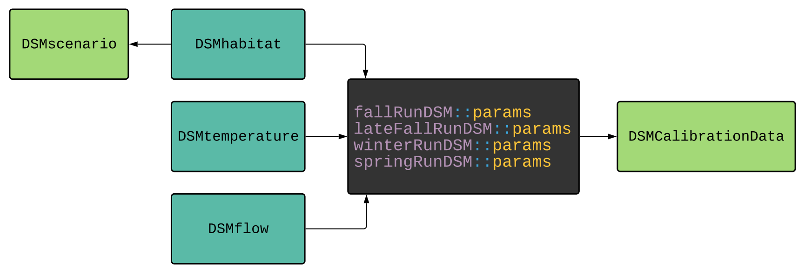

This package provides tools for creating valid scenario input data to run with the fallRunDSM, winterRunDSM, or springRunDSM life cycle models.
This package can be installed using the following commands:
# install.packages("remotes")
remotes::install_github("CVPIA-OSC/DSMscenario")Scenarios can be defined within a dataframe and built using the load_scenario function. Each row within the dataframe represents one unique scenario action for a given watershed, for a period of years and number of units of effort.
Actions are defined below:
For more information run ?load_scenario in the console.
The following example builds a scenario of adding inchannel rearing to the following watersheds for the fall run life cycle model:
habitats <- list(
spawning_habitat = fallRunDSM::params$spawning_habitat,
inchannel_habitat_fry = fallRunDSM::params$inchannel_habitat_fry,
inchannel_habitat_juvenile = fallRunDSM::params$inchannel_habitat_juvenile,
floodplain_habitat = fallRunDSM::params$floodplain_habitat,
weeks_flooded = fallRunDSM::params$weeks_flooded
)
scenario_df <- data.frame(
watershed = c("Upper Sacramento River", "Upper Sacramento River",
"American River", "Feather River", "Lower-mid Sacramento River",
"Battle Creek", "Butte Creek", "Deer Creek", "Stanislaus River"),
action = c(3, 3, 3, 3, 3, 3, 3, 3, 3),
start_year = c(1980, 1990, 1980, 1980, 1980, 1990, 1990, 1990, 1990),
end_year = c(1989, 1999, 1989, 1989, 1989, 1999, 1999, 1999, 1999),
units_of_effort = c(2, 1, 1, 1, 1, 1, 1, 1, 1))
scenario <- get_action_matrices(scenario_df)
scenario <- load_scenario(scenario = scenario,
species = DSMscenario::species$FALL_RUN,
habitat_inputs = habitats)For a full list of proper watershed labels see: DSMscenario::watershed_labels
The list DSMscenario::species can be used to provide appropriate values to the species argument to the load_scenario function. For example, DSMscenario::species$FALL_RUN.
The minimum decay rates for each watershed are stored in DSMscenario::spawn_decay_rate and DSMscenario::rear_decay_rate
Regulated watersheds are stored in DSMscenario::regulated_watersheds and SIT watershed groupings are stored in DSMscenario::watershed_groups
The DSMscenario package uses data from several other packages within the CVPIA Open Science Collaborative. These relationships are visualized in the dependency graph below.
